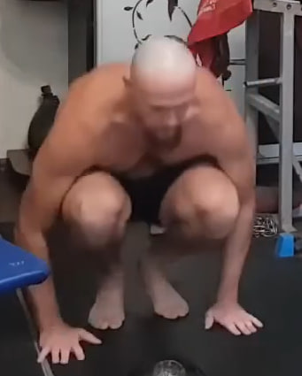
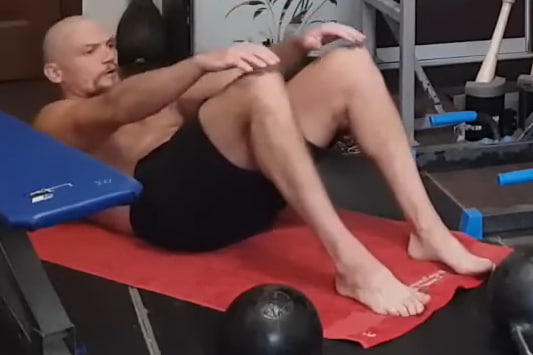
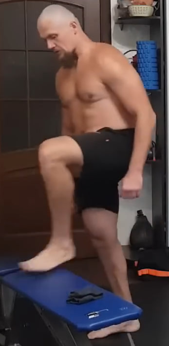
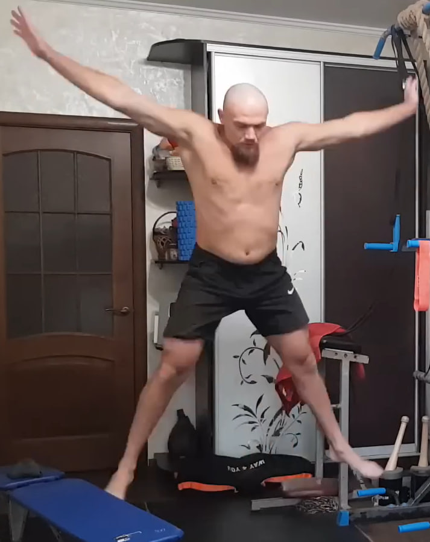
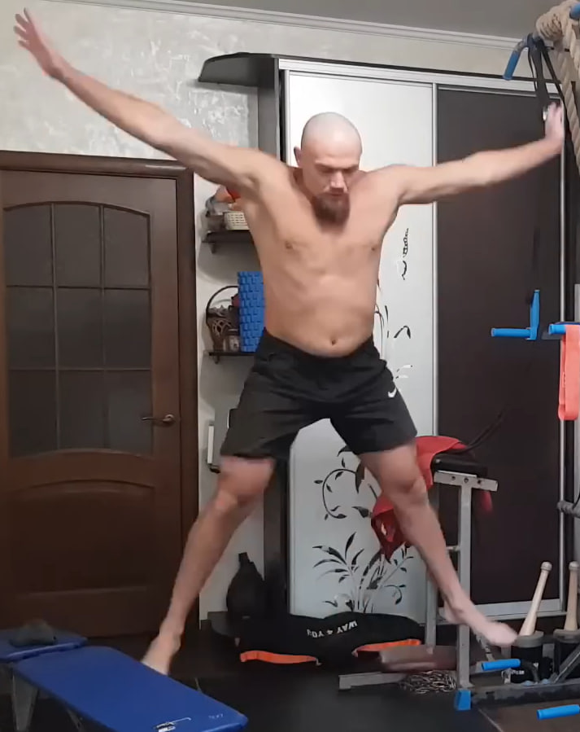

Nota importante
Durante la parte circular de la rutina, no te tumbes en el suelo para descansar. Descansa de pie o caminando suave: así mantienes el pulso y el cuerpo “en trabajo”, sin que el sistema se “apague”.
1. Flexiones profundas y lentas

Realiza 3 series de 10 flexiones con las manos elevadas sobre dos kettlebells o pilas de libros. Baja en 4 segundos y sube en 1 segundo. Si es muy difícil, haz flexiones normales o con las rodillas apoyadas, manteniendo el cuerpo en línea recta.
2. Elevación parcial del abdomen


Acostado boca arriba con rodillas flexionadas, eleva el torso sin incorporarte por completo, solo lo necesario para tocar las rodillas con las manos. Haz 3 series de 10 con movimiento controlado, exhalando al subir e inhalando al bajar.
3. Sentadillas profundas con codos a las rodillas

Coloca los pies al ancho de hombros con el peso en los talones. Baja a una sentadilla profunda, llevando los codos hacia las rodillas para mantener la postura. Realiza 10 repeticiones, manteniendo el pecho abierto y la espalda recta.
4. Saltos en posición de plancha


Desde la posición de plancha, salta llevando los pies hacia adelante y luego vuelve a la plancha con otro salto. Mantén el abdomen firme y la cadera estable. Haz 10 repeticiones rápidas pero controladas.
5. Burpee sin flexión


Desde la plancha, salta con los pies hacia adelante y luego realiza un salto vertical con los brazos abajo. No hay flexión de brazos. Completa 2 series de 10 manteniendo un ritmo fluido y el cuerpo compacto.
6. Saltos estrella desde sentadilla

Comienza en sentadilla completa con las manos cerca del suelo. Desde ahí, explota hacia arriba abriendo brazos y piernas en forma de estrella. Aterriza suave, vuelve a la sentadilla y repite 10 veces sin pausas.
7.1. Flexiones

Repite el ejercicio de flexiones. En este bloque se hacen 2 series de 10.
8. Elevación parcial del abdomen

Repite el ejercicio de abdomen. En este bloque se hacen 2 series de 10.
9. Sentadillas profundas con codos a las rodillas

Repite las sentadillas. En este bloque se hacen 5 repeticiones.
10. Saltos en posición de plancha


Repite los saltos en plancha. En este bloque se hacen 5 repeticiones.
11. Burpee sin flexión


Repite el burpee sin flexión. Puedes hacer 2 series de 5 o 1 serie de 10.
12. Saltos estrella desde sentadilla


Repite los saltos estrella. En este bloque se hace 1 serie de 5.
13. Subidas al banco
Apoya un pie en un banco o taburete y empuja con esa pierna para subir el cuerpo, elevando la otra rodilla. Baja con control y cambia de pierna. Realiza 5 repeticiones por pierna manteniendo el torso recto.
14. Elevación parcial del abdomen


Repite el ejercicio de abdomen. En este bloque se hace 1 serie de 10.
15. Sentadillas profundas con codos a las rodillas

Repite las sentadillas. Puedes hacer 2 series de 5 o 1 serie de 10.
16. Saltos en posición de plancha


Repite los saltos en plancha. Puedes hacer 2 series de 5 o 1 serie de 10.
17. Burpee sin flexión


Repite el burpee sin flexión. En este bloque se hacen 5 repeticiones.
18. Saltos estrella desde sentadilla
 

Repite los saltos estrella. En este bloque se hacen 2 series de 10.